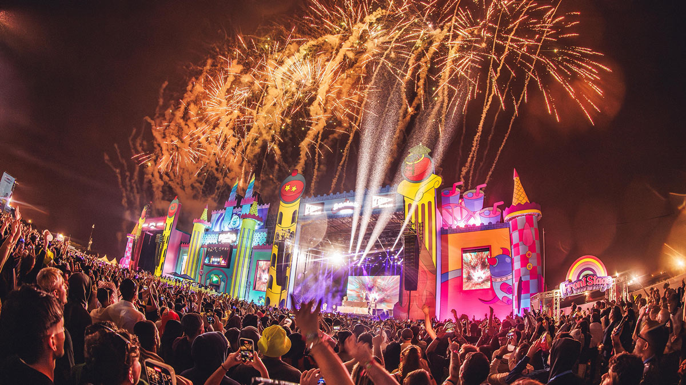

GIJÓN / XIXÓN
GIJÓN / XIXÓN

Destacado
Descubre los sonidos que inundarán Asturias este verano. Entradas ya disponibles para los suscriptores.
Cultura Local
HAPPINESS&Co es tu brújula cultural. Navegamos por la densa oferta de Gijón para traerte una selección exclusiva de lo mejor en música, artes escénicas y plásticas. No te pierdas nada de lo que sucede en tu ciudad.

Artes Escénicas

Festivales